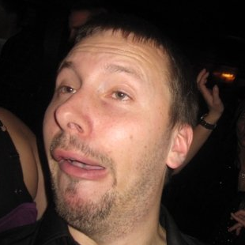

Brud & Brudgom
Kjærlighet ved første blikk?
Kjærlighet er vel å ta litt hardt i, men man kan vel si det slik at Tormod fort ble et ettertraktet mål. Jeg var bitt av dansebasillen og skulle begynne med showdans i Bergen i august 2005. Her viser det seg at instruktøren ikke er den feminine 30 åringen jeg trodde skulle være instruktør, men en superdyktig sørlending på 23 år. Han nøler ikke med å vise alle kunstene sine foran gruppen og jeg klør i fingrene etter å danse med han. På dette tidspunktet var han i grunnen bare en kjekk instruktør jeg ville danse med for å lære massse kule moves av, han hadde jo tross alt et øye for en annen jente i gruppen, og jeg var vel ikke helt fri selv heller. Men etterhvert som showtimene ble flere, jo kjekkere og mer uoppnåelig virket Tormod. Han satte prikken over i'en når han på en av dansetimene sto på hender og t-skjorten gled ned. Tro det eller ei, men der var det jaggu en six-pack og man kan vel mildt sagt si at jeg ble mo i knærene. Jeg har, som de fleste vet, et konkurranseinstinkt uten like, og Tormod ble fort en kunkurranse jeg veldig gjerne ville vinne. Her måtte jeg bare legge beskjedenhet og usikkerhet på hyllen og gå all in! Et par fester, en goltur og hvert sitt breakup senere var målet nådd! Whohoo!
 Jeg flyttet til Bergen for å studere i 2005 og var også giret på å bli med i dansemiljøet på si, så jeg blei med på dansekveldene i byen. Der var det en veldig flink og stram jente som jeg ble nysgjerrig på, så jeg ba henne opp til dans hver dansekveld, og vi danset masse sammen. Etterhvert fikk jeg mannet meg opp til å spørre henne med på en date på Shagloftet i rekkehuset mitt i Chicago, som gikk veldig bra! Men jeg fikk ikke nok dansing av dansekveldene, så jeg inviterte alle ungdommer med i en ny showgruppe som kunne øve på kule og halsbrekkende moves sammen. Dette var jo også en god unnskyldning til å tilbringe mer tid med denne jenta. Alle i showgruppa ble veldig gode venner, vi festet mye sammen og danset enda mer. Det var på en av disse festene jeg virkelig fikk øynene opp for en av jentas venninner. Jeg overleverte den første jenta til en kamerat, resirkulering er jo bra for miljøet, og siktet meg inn på min nye besettelse. Venninna var enda strammere, flinkere og mye hottere enn ho andre, så det irriterte meg at jeg ikke hadde byttet venninne tidligere. Men mange Shagloftdates, limoturer og klinefester seinere (samt noen strategiske blomster til svigermor) var drømmen oppnådd, Benedicte var min! 1337!
Forlovelsen
Det er onsdag 26.mars 2013 og Benedicte får uventet beskjed om at hun ikke skal på jobb i morgen, og at hun må pakke kofferten. Hun vet ikke hvor hun skal, men dagen etter står hun ved en gate på Gardemoen hvor skjermen viser "Prague"! En super overraskelse og Benedicte lurer på om det er graviditeten som skal feires eller om Tormod omsider har noe annet på hjertet. Men foreløpig nyter vi bare fridagene i favoritt-get-away-byen vår.
Det blir fredag 29.03.2013, og vi har booket bord på en Argentinsk biff-restaurant, tror Benedicte. Alle gangene vi har vært i Praha har Benedicte mast på Tormod om at vi må ta en middag på en av elvebåtenes kvelds-cruise, og denne turen er ingen unntak. Derfor har vi avtalt å ta turen innom bryggen på vei til den Argentiske restauranten for å sjekke pris og avgangstid. Når vi kommer til skranken tar Tormod frem det som viser seg å være en reservasjon! Allerede nå er Benedictes mistanke om et frieri bekreftet, men hun velger å ikke røpe at hun skjønner det og gleder seg over å endelig få gå ombord på elvebåten. Her får vi bord i et avlukke helt fremme i båten hvor det blir servert en treretters middag mens båten klatrer oppover elven og pianisten setter prikken over i'en på stemningen. Rettene kommer og går og Benedicte lurer på om det kanskje er enda en perfekt frieri-situasjon som går forbi uten at det skjer. Om ikke han nå gjør det, får hun ta saken i egne hender! Desserten kommer og Tormod blir enda mer stille enn vanlig mens vi nyter is og sjokoladefoundant. Etter noe som føles om en evighet, holder Tormod hånden hennes, kysser henne og beklager Tønnestida, men håper at hun fremdeles har lyst til å gifte seg med han. Svaret vet dere, og Benedicte var jo allerede smelt på tjukka så hva skulle hun si!?
Vel tilbake på hotellet er Tormod så dritings etter å ha drukket alkoholholdig velkomstdrink og drikke til alle rettene for to personer (ref tjukka) at han har glemt at kvelden ikke er ferdig enda. Han blir dermed like sjokkert som Benedicte da de får se at rommet er pyntet med roser og andre blomster, i tillegg til alkoholfri (flaks) sjampis og en del småsnacks. Sjampisen poppes på anstendig vis (se video under), og Tormod anser kvelden som vellykket.
Bryllupet
Lokasjon
Chateau Heralec
★★★★★
Boutique Hotel & Spa
by L'OCCITANE
Heralec 1, 582 55 HERALEC
Dersom noen ønsker å benytte seg av Spa-tilbudet på hotellet må det bestilles før ankomst. Velg behandling fra Spa-menyen og gi oss beskjed, så sender vi videre bestillingen.
Egenandel
Vi dekker det meste av utgifter denne helgen, men det blir en egenandel på 1000 NOK per person. Beløpet kan overføres til 9723.32.05676 når dere svarer på innbydelsen eller senest 31.12.14.
Inkludert:
- Overnatting
- Frokost lørdag og søndag
- Middag fredag og lørdag
- Ubegrenset tilgang til spa-området
- Drikke til maten
- Drikke til festen (til budsjettet er drukket opp)
Ikke inkludert:
- Fly
- Transport til/fra slottet
- Nattmat lørdag
- Drikke utover budsjett
- Minibar
- Massasje og behandlinger i spa-området
Agenda
Fredag
15:00 Innsjekk
17:00 Grillfest
Lørdag
09:00 Frokost
12:00 Lunch
15:00 Vielse
18:00 Middag
21:00 Fest
Søndag
09:00 Frokost
12:00 Utsjekk
Dresskode
”Festtøy” / ”Pent antrekk”
Vi ønsker at stemningen på festen skal være mindre høytidelig, men en bør likevel holde en viss stil med dressjakke, farger som passer til årstiden, pensko og slips. Hel dress til herrene (ikke korte bukser, men kort-ermet skjorte er ok), som gjerne kan være litt lysere. Kjole, skjørt eller buksedress til damene. Dresskoden er ikke ment som en fasit, men mer som en veiledning. Ta på noe som dere føler dere vel i!
Underholdning
Underholdningsbidrag som taler, sang, dans, lek og humor gjør dagen ekstra kjekk for brud og brudgom, men det selvsagt ingen tvang. Har du et bidrag sender du litt om hva, når og ca varighet til våre toastmastere, Hans-Petter og Erlend, på toastmasters@prahabryllup.no. Vi vil snarest mulig i gang med festen, så det er fint om taler ikke drar ut i det vide og brede!
Vi vil gjerne at musikken skal falle i smak for alle, så hjelp oss med å gjøre spillelisten (spotify.prahabryllup.no) variert ved å legge inn dine favorittsanger!
APP
Vi oppfordrer alle til å laste ned bryllupsappen på linkene under og registrere bryllupsnavnet PRAHABRYLLUP. Før helgen, på reisen til og fra og under hele oppholdet på slottet ønsker vi at dere tar masse gøyale bilder og deler de via appen. Alternativt kan bilder også lastes opp og ned på app.prahabryllup.no på din PC.

Transport
Taxi
Det koster ca 850 NOK for en vanlig bil med plass til fire personer og ca 1050 NOK for en stor med plass til 8, begge prisene er for én vei. Er man en natt eller to i Praha sentrum først koster det litt mindre å reise derfra. Bestill på linken under, men ta gjerne kontakt med brudeparet først for å sjekke om andre trenger transport i samme tidsrom eller det allerede er bestilt en bil med ledig plass.
Leiebil
Prisene starter på ca 650 NOK for en liten leiebil fra 08:00 fredag til 20:00 søndag. På linken under er en oversikt over leiebilselskapene som finnes på flyplassen, men finn.no og liknende søkemotorer kan også brukes. Sist vi var i byen leide vi en 8-seter til en hyggelig pris på rentplusprague.com.
Gaver
Gaver trenger dere ikke å tenke på, det viktigste for oss er at dere blir med på å gjøre bryllupet til en minnerik begivenhet! Om noen likevel ønsker å gi en liten oppmerksomhet i bryllupet, ber vi om at det er noe vi får plass til i kofferten på hjemreisen. For eksempel kan dette være et VISA gavekort som kan brukes over alt, eller et gavekort til kjøpesentre i Bergen og omegn. Vi har også opprettet en konto hvor vi ønsker oss penger til bryllupsreise og garasje, kontonummer 9801.13.28709. Større gaver kan eventuelt overrekkes hjemme før eller etter turen, vi ønsker oss blant annet serveringsskåler (New Wave), lysekrone (spisestue), hagelykter og rotting hagemøbler.
RSVP
På grunn av mange detaljer som skal klaffe og betales for (og pga Tønnestid med invitasjonene) ser vi oss dessverre nødt til å sette en litt kort svarfrist, men vi håper like fullt at samtlige kan komme! Svar utbes innen 31.12.14 til rsvp@prahabryllup.no eller sms, men gi gjerne beskjed før fristen om du vet svaret allerede nå. Husk også å gi beskjed dersom det er noen hensyn vi må ta i forhold til mat eller andre behov dere måtte ha.
Det er et stort slott vi har leid, men antall soverom og sengeplasser er likevel ganske begrenset. Derfor setter vi pris på om de som har unger som er gamle nok, finner barnepass hjemme hvis de har mulighet til det.